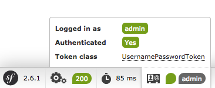

安全性¶
Symfony’s security system is incredibly powerful, but it can also be confusing to set up. In this chapter, you’ll learn how to set up your application’s security step-by-step, from configuring your firewall and how you load users to denying access and fetching the User object. Depending on what you need, sometimes the initial setup can be tough. But once it’s done, Symfony’s security system is both flexible and (hopefully) fun to work with.
Since there’s a lot to talk about, this chapter is organized into a few big sections:
设置
security.yml文件（身份鉴定）设置访问权限（权限控制）
获取当前用户对象
These are followed by a number of small (but still captivating) sections, like logging out and encoding user passwords.
1) Initial security.yml Setup (Authentication)¶
The security system is configured in app/config/security.yml. The default
configuration looks like this:
- YAML
# app/config/security.yml security: providers: in_memory: memory: ~ firewalls: dev: pattern: ^/(_(profiler|wdt)|css|images|js)/ security: false default: anonymous: ~
- XML
<!-- app/config/security.xml --> <?xml version="1.0" encoding="UTF-8"?> <srv:container xmlns="http://symfony.com/schema/dic/security" xmlns:xsi="http://www.w3.org/2001/XMLSchema-instance" xmlns:srv="http://symfony.com/schema/dic/services" xsi:schemaLocation="http://symfony.com/schema/dic/services http://symfony.com/schema/dic/services/services-1.0.xsd"> <config> <provider name="in_memory"> <memory /> </provider> <firewall name="dev" pattern="^/(_(profiler|wdt)|css|images|js)/" security=false /> <firewall name="default"> <anonymous /> </firewall> </config> </srv:container>
- PHP
// app/config/security.php $container->loadFromExtension('security', array( 'providers' => array( 'in_memory' => array( 'memory' => array(), ), ), 'firewalls' => array( 'dev' => array( 'pattern' => '^/(_(profiler|wdt)|css|images|js)/', 'security' => false, ), 'default' => array( 'anonymous' => null, ), ), ));
The firewalls key is the heart of your security configuration. The
dev firewall isn’t important, it just makes sure that Symfony’s development
tools - which live under URLs like /_profiler and /_wdt aren’t blocked
by your security.
小技巧
You can also match a request against other details of the request (e.g. host). For more information and examples read How to Restrict Firewalls to a Specific Request.
All other URLs will be handled by the default firewall (no pattern
key means it matches all URLs). You can think of the firewall like your
security system, and so it usually makes sense to have just one main firewall.
But this does not mean that every URL requires authentication - the anonymous
key takes care of this. In fact, if you go to the homepage right now, you’ll
have access and you’ll see that you’re “authenticated” as anon.. Don’t
be fooled by the “Yes” next to Authenticated, you’re just an anonymous user:
You’ll learn later how to deny access to certain URLs or controllers.
小技巧
Security is highly configurable and there’s a Security Configuration Reference that shows all of the options with some extra explanation.
A) Configuring how your Users will Authenticate¶
The main job of a firewall is to configure how your users will authenticate. Will they use a login form? Http Basic? An API token? All of the above?
Let’s start with Http Basic (the old-school pop-up) and work up from there.
To activate this, add the http_basic key under your firewall:
- YAML
# app/config/security.yml security: # ... firewalls: # ... default: anonymous: ~ http_basic: ~
- XML
<!-- app/config/security.xml --> <?xml version="1.0" encoding="UTF-8"?> <srv:container xmlns="http://symfony.com/schema/dic/security" xmlns:xsi="http://www.w3.org/2001/XMLSchema-instance" xmlns:srv="http://symfony.com/schema/dic/services" xsi:schemaLocation="http://symfony.com/schema/dic/services http://symfony.com/schema/dic/services/services-1.0.xsd"> <config> <!-- ... --> <firewall name="default"> <anonymous /> <http-basic /> </firewall> </config> </srv:container>
- PHP
// app/config/security.php $container->loadFromExtension('security', array( // ... 'firewalls' => array( // ... 'default' => array( 'anonymous' => null, 'http_basic' => null, ), ), ));
Simple! To try this, you need to require the user to be logged in to see
a page. To make things interesting, create a new page at /admin. For
example, if you use annotations, create something like this:
// src/AppBundle/Controller/DefaultController.php
// ...
use Sensio\Bundle\FrameworkExtraBundle\Configuration\Route;
use Symfony\Component\HttpFoundation\Response;
class DefaultController extends Controller
{
/**
* @Route("/admin")
*/
public function adminAction()
{
return new Response('Admin page!');
}
}
Next, add an access_control entry to security.yml that requires the
user to be logged in to access this URL:
- YAML
# app/config/security.yml security: # ... firewalls: # ... access_control: # require ROLE_ADMIN for /admin* - { path: ^/admin, roles: ROLE_ADMIN }
- XML
<!-- app/config/security.xml --> <?xml version="1.0" encoding="UTF-8"?> <srv:container xmlns="http://symfony.com/schema/dic/security" xmlns:xsi="http://www.w3.org/2001/XMLSchema-instance" xmlns:srv="http://symfony.com/schema/dic/services" xsi:schemaLocation="http://symfony.com/schema/dic/services http://symfony.com/schema/dic/services/services-1.0.xsd"> <config> <!-- ... --> <firewall name="default"> <!-- ... --> </firewall> <access-control> <!-- require ROLE_ADMIN for /admin* --> <rule path="^/admin" role="ROLE_ADMIN" /> </access-control> </config> </srv:container>
- PHP
// app/config/security.php $container->loadFromExtension('security', array( // ... 'firewalls' => array( // ... 'default' => array( // ... ), ), 'access_control' => array( // require ROLE_ADMIN for /admin* array('path' => '^/admin', 'role' => 'ROLE_ADMIN'), ), ));
注解
You’ll learn more about this ROLE_ADMIN thing and denying access
later in the 2) Denying Access, Roles and other Authorization section.
Great! Now, if you go to /admin, you’ll see the HTTP Basic popup:
But who can you login as? Where do users come from?
小技巧
Want to use a traditional login form? Great! See How to Build a Traditional Login Form. What other methods are supported? See the Configuration Reference or build your own.
B) Configuring how Users are Loaded¶
When you type in your username, Symfony needs to load that user’s information from somewhere. This is called a “user provider”, and you’re in charge of configuring it. Symfony has a built-in way to load users from the database, or you can create your own user provider.
The easiest (but most limited) way, is to configure Symfony to load hardcoded
users directly from the security.yml file itself. This is called an “in memory”
provider, but it’s better to think of it as an “in configuration” provider:
- YAML
# app/config/security.yml security: providers: in_memory: memory: users: ryan: password: ryanpass roles: 'ROLE_USER' admin: password: kitten roles: 'ROLE_ADMIN' # ...
- XML
<!-- app/config/security.xml --> <?xml version="1.0" encoding="UTF-8"?> <srv:container xmlns="http://symfony.com/schema/dic/security" xmlns:xsi="http://www.w3.org/2001/XMLSchema-instance" xmlns:srv="http://symfony.com/schema/dic/services" xsi:schemaLocation="http://symfony.com/schema/dic/services http://symfony.com/schema/dic/services/services-1.0.xsd"> <config> <provider name="in_memory"> <memory> <user name="ryan" password="ryanpass" roles="ROLE_USER" /> <user name="admin" password="kitten" roles="ROLE_ADMIN" /> </memory> </provider> <!-- ... --> </config> </srv:container>
- PHP
// app/config/security.php $container->loadFromExtension('security', array( 'providers' => array( 'in_memory' => array( 'memory' => array( 'users' => array( 'ryan' => array( 'password' => 'ryanpass', 'roles' => 'ROLE_USER', ), 'admin' => array( 'password' => 'kitten', 'roles' => 'ROLE_ADMIN', ), ), ), ), ), // ... ));
Like with firewalls, you can have multiple providers, but you’ll
probably only need one. If you do have multiple, you can configure which
one provider to use for your firewall under its provider key (e.g.
provider: in_memory).
Try to login using username admin and password kitten. You should
see an error!
No encoder has been configured for account “SymfonyComponentSecurityCoreUserUser”
To fix this, add an encoders key:
- YAML
# app/config/security.yml security: # ... encoders: Symfony\Component\Security\Core\User\User: plaintext # ...
- XML
<!-- app/config/security.xml --> <?xml version="1.0" encoding="UTF-8"?> <srv:container xmlns="http://symfony.com/schema/dic/security" xmlns:xsi="http://www.w3.org/2001/XMLSchema-instance" xmlns:srv="http://symfony.com/schema/dic/services" xsi:schemaLocation="http://symfony.com/schema/dic/services http://symfony.com/schema/dic/services/services-1.0.xsd"> <config> <!-- ... --> <encoder class="Symfony\Component\Security\Core\User\User" algorithm="plaintext" /> <!-- ... --> </config> </srv:container>
- PHP
// app/config/security.php $container->loadFromExtension('security', array( // ... 'encoders' => array( 'Symfony\Component\Security\Core\User\User' => 'plaintext', ), // ... ));
User providers load user information and put it into a User object. If
you load users from the database
or some other source, you’ll
use your own custom User class. But when you use the “in memory” provider,
it gives you a Symfony\Component\Security\Core\User\User object.
Whatever your User class is, you need to tell Symfony what algorithm was
used to encode the passwords. In this case, the passwords are just plaintext,
but in a second, you’ll change this to use bcrypt.
If you refresh now, you’ll be logged in! The web debug toolbar even tells you who you are and what roles you have:
Because this URL requires ROLE_ADMIN, if you had logged in as ryan,
this would deny you access. More on that later (通过URL进行权限控制（access_control）).
从数据库里载入用户¶
If you’d like to load your users via the Doctrine ORM, that’s easy! See How to Load Security Users from the Database (the Entity Provider) for all the details.
C) Encoding the User’s Password¬∂
Whether your users are stored in security.yml, in a database or somewhere
else, you’ll want to encode their passwords. The best algorithm to use is
bcrypt:
- YAML
# app/config/security.yml security: # ... encoders: Symfony\Component\Security\Core\User\User: algorithm: bcrypt cost: 12
- XML
<!-- app/config/security.xml --> <?xml version="1.0" encoding="UTF-8"?> <srv:container xmlns="http://symfony.com/schema/dic/security" xmlns:xsi="http://www.w3.org/2001/XMLSchema-instance" xmlns:srv="http://symfony.com/schema/dic/services" xsi:schemaLocation="http://symfony.com/schema/dic/services http://symfony.com/schema/dic/services/services-1.0.xsd"> <config> <!-- ... --> <encoder class="Symfony\Component\Security\Core\User\User" algorithm="bcrypt" cost="12" /> <!-- ... --> </config> </srv:container>
- PHP
// app/config/security.php $container->loadFromExtension('security', array( // ... 'encoders' => array( 'Symfony\Component\Security\Core\User\User' => array( 'algorithm' => 'bcrypt', 'cost' => 12, ) ), // ... ));
警告
If you’re using PHP 5.4 or lower, you’ll need to install the ircmaxell/password-compat
library via Composer in order to be able to use the bcrypt encoder:
{
"require": {
...
"ircmaxell/password-compat": "~1.0.3"
}
}
Of course, your user’s passwords now need to be encoded with this exact algorithm. For hardcoded users, you can use an online tool, which will give you something like this:
- YAML
# app/config/security.yml security: # ... providers: in_memory: memory: users: ryan: password: $2a$12$LCY0MefVIEc3TYPHV9SNnuzOfyr2p/AXIGoQJEDs4am4JwhNz/jli roles: 'ROLE_USER' admin: password: $2a$12$cyTWeE9kpq1PjqKFiWUZFuCRPwVyAZwm4XzMZ1qPUFl7/flCM3V0G roles: 'ROLE_ADMIN'
- XML
<!-- app/config/security.xml --> <?xml version="1.0" encoding="UTF-8"?> <srv:container xmlns="http://symfony.com/schema/dic/security" xmlns:xsi="http://www.w3.org/2001/XMLSchema-instance" xmlns:srv="http://symfony.com/schema/dic/services" xsi:schemaLocation="http://symfony.com/schema/dic/services http://symfony.com/schema/dic/services/services-1.0.xsd"> <config> <provider name="in_memory"> <memory> <user name="ryan" password="$2a$12$LCY0MefVIEc3TYPHV9SNnuzOfyr2p/AXIGoQJEDs4am4JwhNz/jli" roles="ROLE_USER" /> <user name="admin" password="$2a$12$cyTWeE9kpq1PjqKFiWUZFuCRPwVyAZwm4XzMZ1qPUFl7/flCM3V0G" roles="ROLE_ADMIN" /> </memory> </provider> <!-- ... --> </config> </srv:container>
- PHP
// app/config/security.php $container->loadFromExtension('security', array( 'providers' => array( 'in_memory' => array( 'memory' => array( 'users' => array( 'ryan' => array( 'password' => '$2a$12$LCY0MefVIEc3TYPHV9SNnuzOfyr2p/AXIGoQJEDs4am4JwhNz/jli', 'roles' => 'ROLE_USER', ), 'admin' => array( 'password' => '$2a$12$cyTWeE9kpq1PjqKFiWUZFuCRPwVyAZwm4XzMZ1qPUFl7/flCM3V0G', 'roles' => 'ROLE_ADMIN', ), ), ), ), ), // ... ));
Everything will now work exactly like before. But if you have dynamic users (e.g. from a database), how can you programmatically encode the password before inserting them into the database? Don’t worry, see Âä®ÊÄÅÂä†ÂØÜÂØÜÁ†Å for details.
小技巧
Supported algorithms for this method depend on your PHP version, but
include the algorithms returned by the PHP function hash_algos
as well as a few others (e.g. bcrypt). See the encoders key in the
Security Reference Section
for examples.
It’s also possible to use different hashing algorithms on a user-by-user basis. See How to Choose the Password Encoder Algorithm Dynamically for more details.
D) Configuration Done!¶
Congratulations! You now have a working authentication system that uses Http
Basic and loads users right from the security.yml file.
Your next steps depend on your setup:
- Configure a different way for your users to login, like a login form or something completely custom;
- Load users from a different source, like the database or some other source;
- Learn how to deny access, load the User object and deal with roles in the Authorization section.
2) Denying Access, Roles and other Authorization¶
Users can now login to your app using http_basic or some other method.
Great! Now, you need to learn how to deny access and work with the User object.
This is called authorization, and its job is to decide if a user can
access some resource (a URL, a model object, a method call, ...).
The process of authorization has two different sides:
- The user receives a specific set of roles when logging in (e.g.
ROLE_ADMIN). - You add code so that a resource (e.g. URL, controller) requires a specific
“attribute” (most commonly a role like
ROLE_ADMIN) in order to be accessed.
小技巧
In addition to roles (e.g. ROLE_ADMIN), you can protect a resource
using other attributes/strings (e.g. EDIT) and use voters or Symfony’s
ACL system to give these meaning. This might come in handy if you need
to check if user A can “EDIT” some object B (e.g. a Product with id 5).
See 权限控制列表（ACLs）: 保护单个数据.
角色¶
When a user logs in, they receive a set of roles (e.g. ROLE_ADMIN). In
the example above, these are hardcoded into security.yml. If you’re
loading users from the database, these are probably stored on a column
in your table.
警告
All roles you assign to a user must begin with the ROLE_ prefix.
Otherwise, they won’t be handled by Symfony’s security system in the
normal way (i.e. unless you’re doing something advanced, assigning a
role like FOO to a user and then checking for FOO as described
below will not work).
Roles are simple, and are basically strings that you invent and use as needed.
For example, if you need to start limiting access to the blog admin section
of your website, you could protect that section using a ROLE_BLOG_ADMIN
role. This role doesn’t need to be defined anywhere - you can just start using
it.
小技巧
Make sure every user has at least one role, or your user will look
like they’re not authenticated. A common convention is to give every
user ROLE_USER.
You can also specify a role hierarchy where some roles automatically mean that you also have other roles.
添加限制访问的代码¶
There are two ways to deny access to something:
- access_control in security.yml
allows you to protect URL patterns (e.g.
/admin/*). This is easy, but less flexible; - in your code via the security.authorization_checker service.
通过URL进行权限控制（access_control）¶
The most basic way to secure part of your application is to secure an entire
URL pattern. You saw this earlier, where anything matching the regular expression
^/admin requires the ROLE_ADMIN role:
- YAML
# app/config/security.yml security: # ... firewalls: # ... access_control: # require ROLE_ADMIN for /admin* - { path: ^/admin, roles: ROLE_ADMIN }
- XML
<!-- app/config/security.xml --> <?xml version="1.0" encoding="UTF-8"?> <srv:container xmlns="http://symfony.com/schema/dic/security" xmlns:xsi="http://www.w3.org/2001/XMLSchema-instance" xmlns:srv="http://symfony.com/schema/dic/services" xsi:schemaLocation="http://symfony.com/schema/dic/services http://symfony.com/schema/dic/services/services-1.0.xsd"> <config> <!-- ... --> <firewall name="default"> <!-- ... --> </firewall> <access-control> <!-- require ROLE_ADMIN for /admin* --> <rule path="^/admin" role="ROLE_ADMIN" /> </access-control> </config> </srv:container>
- PHP
// app/config/security.php $container->loadFromExtension('security', array( // ... 'firewalls' => array( // ... 'default' => array( // ... ), ), 'access_control' => array( // require ROLE_ADMIN for /admin* array('path' => '^/admin', 'role' => 'ROLE_ADMIN'), ), ));
This is great for securing entire sections, but you’ll also probably want to secure your individual controllers as well.
You can define as many URL patterns as you need - each is a regular expression.
BUT, only one will be matched. Symfony will look at each starting
at the top, and stop as soon as it finds one access_control entry that
matches the URL.
- YAML
# app/config/security.yml security: # ... access_control: - { path: ^/admin/users, roles: ROLE_SUPER_ADMIN } - { path: ^/admin, roles: ROLE_ADMIN }
- XML
<!-- app/config/security.xml --> <?xml version="1.0" encoding="UTF-8"?> <srv:container xmlns="http://symfony.com/schema/dic/security" xmlns:xsi="http://www.w3.org/2001/XMLSchema-instance" xmlns:srv="http://symfony.com/schema/dic/services" xsi:schemaLocation="http://symfony.com/schema/dic/services http://symfony.com/schema/dic/services/services-1.0.xsd"> <config> <!-- ... --> <access-control> <rule path="^/admin/users" role="ROLE_SUPER_ADMIN" /> <rule path="^/admin" role="ROLE_ADMIN" /> </access-control> </config> </srv:container>
- PHP
// app/config/security.php $container->loadFromExtension('security', array( // ... 'access_control' => array( array('path' => '^/admin/users', 'role' => 'ROLE_SUPER_ADMIN'), array('path' => '^/admin', 'role' => 'ROLE_ADMIN'), ), ));
Prepending the path with ^ means that only URLs beginning with the
pattern are matched. For example, a path of simply /admin (without
the ^) would match /admin/foo but would also match URLs like /foo/admin.
设置Controller和其他代码的访问限制¶
You can easily deny access from inside a controller:
// ...
public function helloAction($name)
{
// The second parameter is used to specify on what object the role is tested.
$this->denyAccessUnlessGranted('ROLE_ADMIN', null, 'Unable to access this page!');
// Old way :
// if (false === $this->get('security.authorization_checker')->isGranted('ROLE_ADMIN')) {
// throw $this->createAccessDeniedException('Unable to access this page!');
// }
// ...
}
2.6 新版功能: The denyAccessUnlessGranted() method was introduced in Symfony 2.6. Previously (and
still now), you could check access directly and throw the AccessDeniedException as shown
in the example above).
2.6 新版功能: The security.authorization_checker service was introduced in Symfony 2.6. Prior
to Symfony 2.6, you had to use the isGranted() method of the security.context service.
In both cases, a special
AccessDeniedException
is thrown, which ultimately triggers a 403 HTTP response inside Symfony.
That’s it! If the user isn’t logged in yet, they will be asked to login (e.g. redirected to the login page). If they are logged in, they’ll be shown the 403 access denied page (which you can customize).
Thanks to the SensioFrameworkExtraBundle, you can also secure your controller using annotations:
// ...
use Sensio\Bundle\FrameworkExtraBundle\Configuration\Security;
/**
* @Security("has_role('ROLE_ADMIN')")
*/
public function helloAction($name)
{
// ...
}
For more information, see the FrameworkExtraBundle documentation.
在模板中进行权限控制¶
If you want to check if the current user has a role inside a template, use the built-in helper function:
- Twig
{% if is_granted('ROLE_ADMIN') %} <a href="...">Delete</a> {% endif %}
- PHP
<?php if ($view['security']->isGranted('ROLE_ADMIN')): ?> <a href="...">Delete</a> <?php endif ?>
If you use this function and are not behind a firewall, an exception will be thrown. Again, it’s almost always a good idea to have a main firewall that covers all URLs (as has been shown in this chapter).
警告
Be careful with this in your layout or on your error pages! Because of
some internal Symfony details, to avoid broken error pages in the prod
environment, wrap calls in these templates with a check for app.user:
{% if app.user and is_granted('ROLE_ADMIN') %}
保护其他Service¶
In fact, anything in Symfony can be protected by doing something similar to this. For example, suppose you have a service (i.e. a PHP class) whose job is to send emails. You can restrict use of this class - no matter where it’s being used from - to only certain users.
For more information see How to Secure any Service or Method in your Application.
Checking to see if a User is Logged In (IS_AUTHENTICATED_FULLY)¶
So far, you’ve checked access based on roles - those strings that start with
ROLE_ and are assigned to users. But if you only want to check if a
user is logged in (you don’t care about roles), then you can see IS_AUTHENTICATED_FULLY:
// ...
public function helloAction($name)
{
if (!$this->get('security.authorization_checker')->isGranted('IS_AUTHENTICATED_FULLY')) {
throw $this->createAccessDeniedException();
}
// ...
}
小技巧
You can of course also use this in access_control.
IS_AUTHENTICATED_FULLY isn’t a role, but it kind of acts like one, and every
user that has successfully logged in will have this. In fact, there are three
special attributes like this:
IS_AUTHENTICATED_REMEMBERED: All logged in users have this, even if they are logged in because of a “remember me cookie”. Even if you don’t use the remember me functionality, you can use this to check if the user is logged in.IS_AUTHENTICATED_FULLY: This is similar toIS_AUTHENTICATED_REMEMBERED, but stronger. Users who are logged in only because of a “remember me cookie” will haveIS_AUTHENTICATED_REMEMBEREDbut will not haveIS_AUTHENTICATED_FULLY.IS_AUTHENTICATED_ANONYMOUSLY: All users (even anonymous ones) have this - this is useful when whitelisting URLs to guarantee access - some details are in How Does the Security access_control Work?.
You can also use expressions inside your templates:
- Twig
{% if is_granted(expression( '"ROLE_ADMIN" in roles or (user and user.isSuperAdmin())' )) %} <a href="...">Delete</a> {% endif %}
- PHP
<?php if ($view['security']->isGranted(new Expression( '"ROLE_ADMIN" in roles or (user and user.isSuperAdmin())' ))): ?> <a href="...">Delete</a> <?php endif; ?>
For more details on expressions and security, see Security: Complex Access Controls with Expressions.
权限控制列表（ACLs）: 保护单个数据¶
Imagine you are designing a blog where users can comment on your posts. You also want a user to be able to edit their own comments, but not those of other users. Also, as the admin user, you yourself want to be able to edit all comments.
To accomplish this you have 2 options:
- Voters allow you to use business logic (e.g. the user can edit this post because they were the creator) to determine access. You’ll probably want this option - it’s flexible enough to solve the above situation.
- ACLs allow you to create a database structure where you can assign any arbitrary user any access (e.g. EDIT, VIEW) to any object in your system. Use this if you need an admin user to be able to grant customized access across your system via some admin interface.
In both cases, you’ll still deny access using methods similar to what was shown above.
获取用户对象¶
2.6 新版功能: The security.token_storage service was introduced in Symfony 2.6. Prior
to Symfony 2.6, you had to use the getToken() method of the security.context service.
After authentication, the User object of the current user can be accessed
via the security.token_storage service. From inside a controller, this will
look like:
public function indexAction()
{
if (!$this->get('security.authorization_checker')->isGranted('IS_AUTHENTICATED_FULLY')) {
throw $this->createAccessDeniedException();
}
$user = $this->getUser();
// the above is a shortcut for this
$user = $this->get('security.token_storage')->getToken()->getUser();
}
小技巧
The user will be an object and the class of that object will depend on your user provider.
Now you can call whatever methods are on your User object. For example,
if your User object has a getFirstName() method, you could use that:
use Symfony\Component\HttpFoundation\Response;
public function indexAction()
{
// ...
return new Response('Well hi there '.$user->getFirstName());
}
总是检查用户登录状态¶
It’s important to check if the user is authenticated first. If they’re not,
$user will either be null or the string anon.. Wait, what? Yes,
this is a quirk. If you’re not logged in, the user is technically the string
anon., though the getUser() controller shortcut converts this to
null for convenience.
The point is this: always check to see if the user is logged in before using
the User object, and use the isGranted method (or
access_control) to do this:
// yay! Use this to see if the user is logged in
if (!$this->get('security.authorization_checker')->isGranted('IS_AUTHENTICATED_FULLY')) {
throw $this->createAccessDeniedException();
}
// boo :(. Never check for the User object to see if they're logged in
if ($this->getUser()) {
}
从模板里获取用户对象¶
In a Twig Template this object can be accessed via the app.user key:
- Twig
{% if is_granted('IS_AUTHENTICATED_FULLY') %} <p>Username: {{ app.user.username }}</p> {% endif %}
- PHP
<?php if ($view['security']->isGranted('IS_AUTHENTICATED_FULLY')): ?> <p>Username: <?php echo $app->getUser()->getUsername() ?></p> <?php endif; ?>
退出登录¶
Usually, you’ll also want your users to be able to log out. Fortunately,
the firewall can handle this automatically for you when you activate the
logout config parameter:
- YAML
# app/config/security.yml security: firewalls: secured_area: # ... logout: path: /logout target: / # ...
- XML
<!-- app/config/security.xml --> <?xml version="1.0" encoding="UTF-8"?> <srv:container xmlns="http://symfony.com/schema/dic/security" xmlns:xsi="http://www.w3.org/2001/XMLSchema-instance" xmlns:srv="http://symfony.com/schema/dic/services" xsi:schemaLocation="http://symfony.com/schema/dic/services http://symfony.com/schema/dic/services/services-1.0.xsd"> <config> <firewall name="secured_area" pattern="^/"> <!-- ... --> <logout path="/logout" target="/" /> </firewall> <!-- ... --> </config> </srv:container>
- PHP
// app/config/security.php $container->loadFromExtension('security', array( 'firewalls' => array( 'secured_area' => array( // ... 'logout' => array('path' => 'logout', 'target' => '/'), ), ), // ... ));
Next, you’ll need to create a route for this URL (but not a controller):
- YAML
# app/config/routing.yml logout: path: /logout
- XML
<!-- app/config/routing.xml --> <?xml version="1.0" encoding="UTF-8" ?> <routes xmlns="http://symfony.com/schema/routing" xmlns:xsi="http://www.w3.org/2001/XMLSchema-instance" xsi:schemaLocation="http://symfony.com/schema/routing http://symfony.com/schema/routing/routing-1.0.xsd"> <route id="logout" path="/logout" /> </routes>
- PHP
// app/config/routing.php use Symfony\Component\Routing\RouteCollection; use Symfony\Component\Routing\Route; $collection = new RouteCollection(); $collection->add('logout', new Route('/logout', array())); return $collection;
And that’s it! By sending a user to /logout (or whatever you configure
the path to be), Symfony will un-authenticate the current user.
Once the user has been logged out, they will be redirected to whatever path
is defined by the target parameter above (e.g. the homepage).
小技巧
If you need to do something more interesting after logging out, you can
specify a logout success handler by adding a success_handler key
and pointing it to a service id of a class that implements
LogoutSuccessHandlerInterface.
See Security Configuration Reference.
动态加密密码¶
If, for example, you’re storing users in the database, you’ll need to encode the users’ passwords before inserting them. No matter what algorithm you configure for your user object, the hashed password can always be determined in the following way from a controller:
// whatever *your* User object is
$user = new AppBundle\Entity\User();
$plainPassword = 'ryanpass';
$encoder = $this->container->get('security.password_encoder');
$encoded = $encoder->encodePassword($user, $plainPassword);
$user->setPassword($encoded);
2.6 新版功能: The security.password_encoder service was introduced in Symfony 2.6.
In order for this to work, just make sure that you have the encoder for your
user class (e.g. AppBundle\Entity\User) configured under the encoders
key in app/config/security.yml.
The $encoder object also has an isPasswordValid method, which takes
the User object as the first argument and the plain password to check
as the second argument.
警告
When you allow a user to submit a plaintext password (e.g. registration form, change password form), you must have validation that guarantees that the password is 4096 characters or fewer. Read more details in How to implement a simple Registration Form.
角色的继承¶
Instead of associating many roles to users, you can define role inheritance rules by creating a role hierarchy:
- YAML
# app/config/security.yml security: role_hierarchy: ROLE_ADMIN: ROLE_USER ROLE_SUPER_ADMIN: [ROLE_ADMIN, ROLE_ALLOWED_TO_SWITCH]
- XML
<!-- app/config/security.xml --> <?xml version="1.0" encoding="UTF-8"?> <srv:container xmlns="http://symfony.com/schema/dic/security" xmlns:xsi="http://www.w3.org/2001/XMLSchema-instance" xmlns:srv="http://symfony.com/schema/dic/services" xsi:schemaLocation="http://symfony.com/schema/dic/services http://symfony.com/schema/dic/services/services-1.0.xsd"> <config> <role id="ROLE_ADMIN">ROLE_USER</role> <role id="ROLE_SUPER_ADMIN">ROLE_ADMIN, ROLE_ALLOWED_TO_SWITCH</role> </config> </srv:container>
- PHP
// app/config/security.php $container->loadFromExtension('security', array( 'role_hierarchy' => array( 'ROLE_ADMIN' => 'ROLE_USER', 'ROLE_SUPER_ADMIN' => array( 'ROLE_ADMIN', 'ROLE_ALLOWED_TO_SWITCH', ), ), ));
In the above configuration, users with ROLE_ADMIN role will also have the
ROLE_USER role. The ROLE_SUPER_ADMIN role has ROLE_ADMIN, ROLE_ALLOWED_TO_SWITCH
and ROLE_USER (inherited from ROLE_ADMIN).
无状态风格（Stateless）身份验证¶
By default, Symfony relies on a cookie (the Session) to persist the security context of the user. But if you use certificates or HTTP authentication for instance, persistence is not needed as credentials are available for each request. In that case, and if you don’t need to store anything else between requests, you can activate the stateless authentication (which means that no cookie will be ever created by Symfony):
- YAML
# app/config/security.yml security: firewalls: main: http_basic: ~ stateless: true
- XML
<!-- app/config/security.xml --> <?xml version="1.0" encoding="UTF-8"?> <srv:container xmlns="http://symfony.com/schema/dic/security" xmlns:xsi="http://www.w3.org/2001/XMLSchema-instance" xmlns:srv="http://symfony.com/schema/dic/services" xsi:schemaLocation="http://symfony.com/schema/dic/services http://symfony.com/schema/dic/services/services-1.0.xsd"> <config> <firewall stateless="true"> <http-basic /> </firewall> </config> </srv:container>
- PHP
// app/config/security.php $container->loadFromExtension('security', array( 'firewalls' => array( 'main' => array('http_basic' => array(), 'stateless' => true), ), ));
注解
If you use a form login, Symfony will create a cookie even if you set
stateless to true.
检查依赖中是否包含已知安全漏洞¶
When using lots of dependencies in your Symfony projects, some of them may
contain security vulnerabilities. That’s why Symfony includes a command called
security:check that checks your composer.lock file to find any known
security vulnerability in your installed dependencies:
$ php app/console security:check
A good security practice is to execute this command regularly to be able to update or replace compromised dependencies as soon as possible. Internally, this command uses the public security advisories database published by the FriendsOfPHP organization.
小技巧
The security:check command terminates with a non-zero exit code if
any of your dependencies is affected by a known security vulnerability.
Therefore, you can easily integrate it in your build process.
总结¶
Woh! Nice work! You now know more than the basics of security. The hardest parts are when you have custom requirements: like a custom authentication strategy (e.g. API tokens), complex authorization logic and many other things (because security is complex!).
Fortunately, there are a lot of Security Cookbook Articles aimed at describing many of these situations. Also, see the Security Reference Section. Many of the options don’t have specific details, but seeing the full possible configuration tree may be useful.
祝好运！